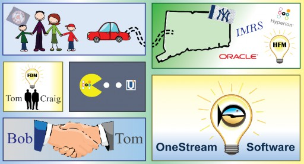

Foreword
Foreword
The Journey
The picture below was created by Bob Powers’ son, Kyle Powers, and it tells the story of how Bob and I have been sharing the dream of creating the OneStream platform.
We used this graphic to try to explain to prospects why we thought we deserved a chance at their business. Read on if you want a little color on how we presumed the most-admired companies in the world should give OneStream a chance.

The OneStream Foundation Handbook represents a huge sense of pride and accomplishment for me. You are probably wondering why I would make this statement. After all, I did not write the book; a group of super-smart and dedicated people (OneStreamers, as we like to call them) did the hard work. To understand why this book feels like such an accomplishment, and source of pride for me, we need to go all the way back to the 1990s when I first started working with first-generation CPM products (IMRS Micro Control and Hyperion Enterprise).
I spent the first ten years of my career working as an accountant and financial analyst in some large global corporations. I had hopes and aspirations of becoming a CFO at one of these prestigious companies. However, at the same time, I was writing and selling custom business software as a side interest. I still remember the day (in June 1993) that I was introduced to a Lotus 1-2-3 Add-in (yes, I said Lotus 1-2-3!) that connected my spreadsheet to my analytic application and which allowed me to submit my intercompany matching updates to our corporate headquarters. This Add-in allowed me to work on budgets, create financial statements, and use my spreadsheet skills to interact with a larger data universe (I was blown away).
Fast-forward a few years, and IMRS Micro Control had become Hyperion Enterprise. At this time, I found myself in charge of a worldwide Hyperion Enterprise deployment at a massive global manufacturing company (we had 80 deployments of Hyperion Enterprise around the world). This job was quite a challenge – the company really relied on Hyperion Enterprise – but every time the business changed, we had to update all 80 instances of the application. (This was crazy hard, time-consuming, and incredibly stressful.) There had to be a better way to manage this system and deliver the application to Users around the world. There was. The answer was Citrix. Citrix allowed us to deploy the application in a single instance and centralized fashion. From my perspective, this change created the foundation of the Modern CPM platform. Having a centralized global information system with the agility to model changing business scenarios, support external statutory reporting, and provide a flexible planning system, became an expectation and a requirement for the office of the CFO.
In the late 1990s, after Citrix and web application development technologies took hold as a foundation technology for deploying enterprise software, a new set of challenges came into focus. The centralization of critical business systems drove higher data volumes, higher User concurrency, and increased the complexities related to data integration. In January of 2000, Craig Colby, Jeff DeGrieck, and I founded a company called UpStream Software. Our goal was to reduce the growing cost and complexity of collecting and validating the source data that was required to feed Hyperion Enterprise. This was a niche strategy, but we felt good about the opportunity because Hyperion was a market leader. The UpStream company was ultimately acquired by Hyperion in 2007, and is now known as Financial Data Quality Management (FDM).
UpStream is an important part of this story for a lot of reasons. First, it taught me and the other founders how to be entrepreneurs, and let us build a company that had an extreme focus on the customer. This is critical because we knew what we were trying to accomplish, and all our energy went into achieving the goal of creating a transparent and Workflow-driven approach to loading data. Second, the UpStream journey introduced us to the people who would go on to form the foundation of OneStream’s thought leadership team and partner community. Third, UpStream provided broad exposure to all of the different CPM application technologies that were emerging in the early 2000s. Our focus at UpStream was to provide smart connectors that let us remote control any CPM engine that had an open API. This meant that with each integration we built, we gained a fresh perspective on the strengths and weaknesses of each of the different products in the market.
We were gaining a deep understanding of where the CPM market could go.
So, why is this book such a source of pride? Stay with me a little longer; I promise I will tie this all together for you. I mentioned that UpStream introduced us to key members of the CPM community, and that statement cannot be emphasized enough. I did not know it at the time, but UpStream created an intersection of technologies, ideas, people, and relationships that would enable a group of us to think beyond the niche ideas of UpStream into the grander vision that underpins OneStream software.
In November 2000, Craig and I flew to Stamford, Connecticut, for an engineering meeting between UpStream and Hyperion. UpStream was a partner that was tightly integrating with Hyperion’s CPM products, and we were gaining a little market recognition. Hyperion engineering and product management had some early interest in what we were doing with UpStream WebLink, because data loading and data quality was always a big customer pain point. Nothing came out of this meeting in terms of a business relationship, but the meeting introduced me to Bob Powers – the engineer that was working on the next generation analytic engine that Hyperion was developing to replace Hyperion Enterprise.
Bob attended the meeting, asked a few questions, and stopped me as we exited the meeting and said, “Really impressive product… are you thinking about integrating with Hyperion Financial Management (HFM)? That is our next generation product that I am working on.”
I immediately liked Bob; he was super-smart and humble. I was eager to build a connector to HFM, and I was excited about having a direct relationship with the lead engineer. From 2001-2006, life was a blur; UpStream was growing 90-100% a year, and we were building integrations to all of Hyperion’s products and some competing products (Comshare and OutlookSoft). In 2003, we settled in and became an exclusive partner to Hyperion, and the UpStream engineering team and I started working a lot closer with Bob and Hyperion’s engineering team at this time. We collaborated on tighter engine integration, product UI consistency, performance, and overall technology advancement.
Bob and I were forming a mutual respect for each other’s engineering skills, and we liked collaborating. Then, in 2006, Hyperion came to me and said, “We have been dating long enough. We would like to purchase UpStream and make you part of the family.” After careful consideration, we felt this was the best outcome for all stakeholders since the company was really built for – and targeted towards – Hyperion’s products and community. UpStream became Hyperion FDM in mid-2006, and we started to really integrate UpStream’s engine technology into the Hyperion product suite. Bob and I began to work more closely together, and we often talked about what a next-generation CPM product could be.
Almost there… the OneStream dream is about to take shape!
In 2007, acquisitions became prevalent in the CPM space, and in a matter of months, all the pillar companies were scooped up by larger enterprise software companies. In mid-2007, Oracle acquired Hyperion, then quickly after that SAP acquired Business Objects, and IBM acquired Cognos. Then, just like that, the standalone CPM market was gone. At this time, Bob and I both stepped away from the CPM market. Bob went on to become the CTO of a SaaS company, and I took some time off so that I could spend more time with my family.
Bob and I kept in touch over the next few years, but we were both busy living our lives as we watched the financial crisis rage around us (what a crazy time). Around 2009, I started getting bored, and I was looking for a new challenge. Jeff DeGrieck, Craig Colby, and I began to think about our next company. We initially focused on XBRL as a potential market opportunity. Bob and I talked about this, but he was not that interested since his true passion was centered on in-memory analytic engines and not statutory reporting. I also had a real passion for engineering complex analytic software, but I just didn’t think there was room in the market to compete against Oracle, SAP, and IBM. I felt that we should just focus on an adjacent/complementary product space such as XBRL.
Here is where it all comes together. In late 2009, Jeff DeGrieck, Craig Colby, and I went to Washington DC to attend an XBRL conference. Within four hours of attending the conference, we were at the bar mourning the death of our ‘next’ company idea. It only took us a few sessions and a few interviews with existing players in the market to realize there was no way to build a meaningful business in the XBRL space. We ate lots of good food, drank too much, and goofed around in the capital for a few days, and then returned home. After that conference, we had a choice. Do nothing and look for other business interests or follow what we know and believe in our passion for CPM. It was hard for us to legitimately say to each other, let’s build an application to take on the big dogs (Oracle, SAP, and IBM).
In 2010, OneStream was born. It started with a call to Bob, where we discussed the potential to create a unified platform that encompassed the capabilities of all the products that we had seen in the evolving CPM space. This space had expanded over the years to go way beyond Financial Planning and Reporting to now include solutions such as Account Reconciliations, Financial Close Management, and many other domain-centric products for the office of finance.
I remember being on the phone with Bob and pacing around my front yard when we came to the conclusion that we would embark on a software architecture and coding journey that would be the equivalent of two people trying to eat an elephant for dinner. We discussed the idea that we needed to build a platform that could basically replace the 15 or so different CPM products with a single unified platform. The name OneStream comes from the idea that these 15 products needed to become one platform with infinite Extensibility. This started another blurry phase in my life as both Bob and I went into coding overdrive. We literally divided up the engines that needed to be coded, and just set out coding until we had the foundation of a product.
In 2011, we began to have some core CPM capabilities in place, and it was time to get Craig Colby and other key people like Jeff DeGrieck, Eric Davidson, Terry Shea, Matt Baranowski, Todd Allen, John Von Allmen, Tony Dimitrie, Shawn Stalker, and Todd Newman involved to formally launch the product. This was a massive product that would require a lot of testing and validation before we could sell it to a customer. The 2010-2012 years were really focused on R&D and technical validation; the engines had to be solid, and the data had to be right. We managed to get our first customers in 2012 and began the long process of building an operational company.
The next task was to get a group of industry and product experts to join our team and drive us towards product implementation success. We went after Peter Fugere, who I had met way back in the early days of HFM (he wrote the book on HFM). Next, John Von Allmen said we should go after Steve Mebius (he architected the Hyperion GE implementation). Steve was a big fan of Jon Golembiewski, so we hired him too. Tony Dimitrie knew Jerri McConnell, who knew Eric Osmanski, and the list of Rockstars grew. At the same time, we were heads down on guaranteeing success at our first customer – Federal Mogul – and we were working with Jody Di Giovanni, a
OneStream evangelist, and she eventually joined our team. Each time we added a key team member, they led us to other key people, and many of them have come together to share their deep knowledge of OneStream as authors of this book (Shawn Stalker, Jon Golembiewski, Eric Osmanski, Jody Di Giovanni, Jacqui Slone, Chul Smith, Nick Kroppe, Jeff Jones, Andy Moore, Sam Richards, Nick Blazosky, Greg Bankston).
Here is where the pride and personal gratification starts. Just like UpStream, we started a business with a passion for our product and a commitment to our customers (our mission has always been to create fanatical customer success). The combination of a great product and great people has let us attract the best and brightest people from the CPM community. The one thing that I have always known is that if we created a great product and we could attract the best people in the CPM industry, there would be no stopping us. When I look at the names of the authors and contributors to this book, I see a list of people that have given a lot of time, energy, and late nights to help OneStream develop as a company. I am humbled by their commitment to making OneStream a great company.
Each Rockstar that joins OneStream helps us attract and hire the next Rockstar. I have only talked about this phenomenon from the product and services side of this business, but this pattern of relationships and friendships repeats itself in every part of our company. This is the true magic of OneStream.
Foreword › The Journey